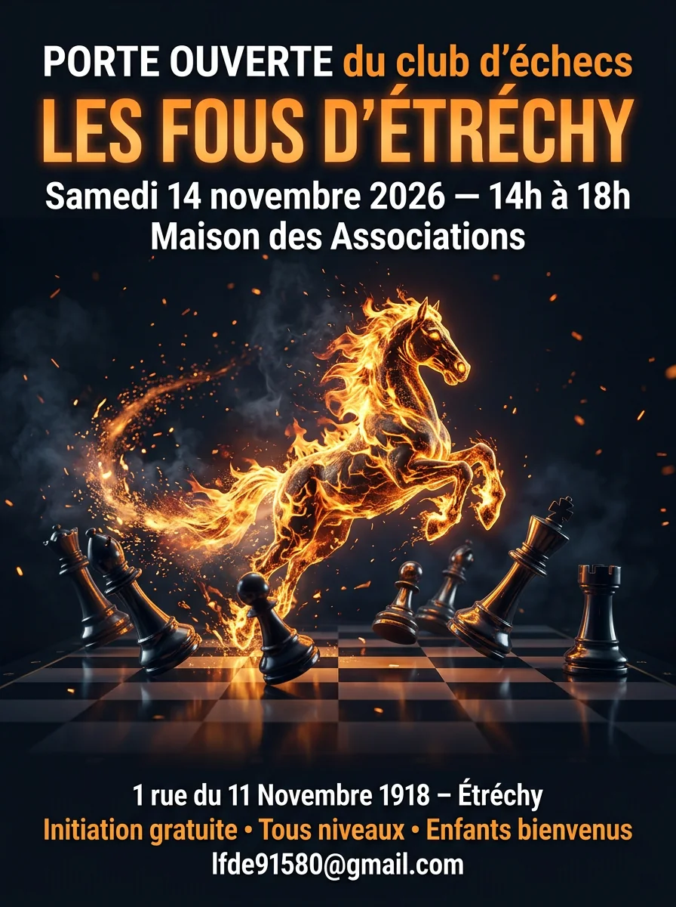
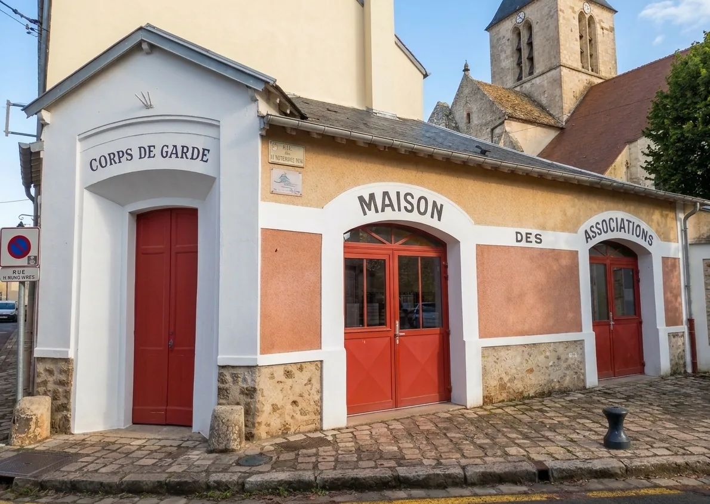

a1Club d'échecs de loisirs · Étréchy (91580)
Faites défiler · passez la souris sur les films
g8Les prochaines dates
Tout l'agenda →!Actualité du club
Journée portes ouvertes
Le samedi 14 novembre, le club ouvre grand ses portes. Séance libre : venez nombreux jouer une partie, découvrir le club et rencontrer ses membres, que vous débutiez ou que vous jouiez depuis toujours.
- Date
- Samedi 14 novembre 2026
- Horaire
- De 14 h à 18 h
- Lieu
- Maison des Associations, 1 rue du 11 Novembre 1918, 91580 Étréchy
- Séance
- Libre, venez nombreux


Appuyez sur la pendule, comme après un coup.
c3Le club
Une association à taille humaine, au sud de l'Essonne.
Les séances mêlent parties libres, petits tournois internes, initiation et ateliers d'étude.
On y joue pour le plaisir de la partie, sans pression de classement, et chacun progresse à son rythme. Les plus jeunes y côtoient les joueurs expérimentés, et chacun repart avec une idée de plus.
⌗a1 → h8
Choisissez votre case.
Chaque rubrique du site porte la coordonnée d'une case, le long de la grande diagonale du fou.
- c3Le clubUne association à taille humaine, son histoire et son bureau.
- d4ActivitésParties libres, tournois internes et apprentissage.
- e4Le matérielÉchiquiers de tournoi, pendule DGT 2010 et échiquier mural.
- e5ApprendreLes bases des échecs en trois leçons interactives.
- f6ApplicationsDix outils pour s'entraîner entre deux séances.
▶Les films du club
Le club, en mouvement.
Les membres du club en vedette, dans de courtes animations tournées au Corps de garde et ailleurs.
Tempête sur l'échiquier
Au Corps de garde, une tornade soulève les pièces en pleine partie.
FilmLe Tableau des Fous
Deux joueurs d'un tableau Renaissance sortent du cadre pour finir leur partie.
Film · avec musiqueAu fil des saisons
Une seule partie sous les platanes du Corps de garde, de l'été jusqu'au printemps.
Film · avec le sonLa 64ᵉ Dimension
Le bureau du club embarque à bord et traverse plus d'un siècle, de 1900 à aujourd'hui.

g7Venir au club
Tous les samedis, de 14 h à 18 h
- Lieu
- Maison des Associations, près de la mairie, rue du 11 Novembre, 91580 Étréchy
- Saison
- Du 01/11/2026 au 31/10/2027
- Public
- Enfants, adultes, débutants et joueurs de club
- Contact
- lfde91580@gmail.com
Appuyez sur la pendule, comme après un coup.